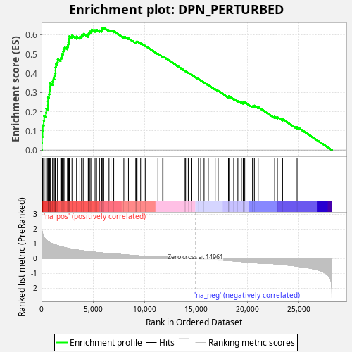
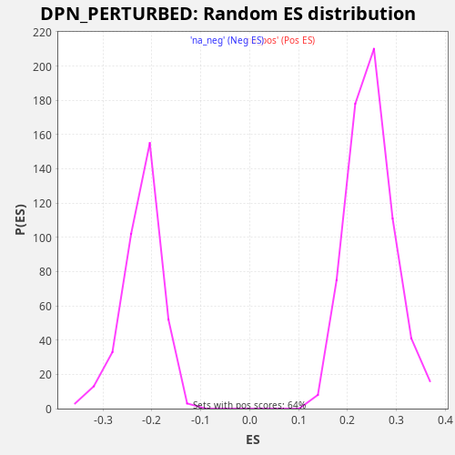

| Dataset | DPN_24h_sinP4_control_3 |
| Phenotype | NoPhenotypeAvailable |
| Upregulated in class | na_pos |
| GeneSet | DPN_PERTURBED |
| Enrichment Score (ES) | 0.6356206 |
| Normalized Enrichment Score (NES) | 2.5727413 |
| Nominal p-value | 0.0 |
| FDR q-value | 0.0 |
| FWER p-Value | 0.0 |

| SYMBOL | RANK IN GENE LIST | RANK METRIC SCORE | RUNNING ES | CORE ENRICHMENT | |
|---|---|---|---|---|---|
| 1 | ENSG00000128590 | 23 | 2.007 | 0.0364 | Yes |
| 2 | ENSG00000138449 | 47 | 1.825 | 0.0693 | Yes |
| 3 | ENSG00000044574 | 100 | 1.673 | 0.0985 | Yes |
| 4 | ENSG00000099194 | 120 | 1.639 | 0.1282 | Yes |
| 5 | ENSG00000171227 | 213 | 1.489 | 0.1525 | Yes |
| 6 | ENSG00000226549 | 259 | 1.435 | 0.1775 | Yes |
| 7 | ENSG00000197594 | 435 | 1.255 | 0.1945 | Yes |
| 8 | ENSG00000166598 | 467 | 1.238 | 0.2163 | Yes |
| 9 | ENSG00000206384 | 619 | 1.152 | 0.2323 | Yes |
| 10 | ENSG00000151726 | 624 | 1.150 | 0.2534 | Yes |
| 11 | ENSG00000215644 | 632 | 1.146 | 0.2744 | Yes |
| 12 | ENSG00000117643 | 731 | 1.104 | 0.2914 | Yes |
| 13 | ENSG00000155660 | 782 | 1.078 | 0.3096 | Yes |
| 14 | ENSG00000171798 | 828 | 1.061 | 0.3276 | Yes |
| 15 | ENSG00000211584 | 836 | 1.058 | 0.3470 | Yes |
| 16 | ENSG00000066248 | 1071 | 0.983 | 0.3569 | Yes |
| 17 | ENSG00000099875 | 1167 | 0.955 | 0.3712 | Yes |
| 18 | ENSG00000219481 | 1240 | 0.935 | 0.3859 | Yes |
| 19 | ENSG00000181790 | 1329 | 0.913 | 0.3997 | Yes |
| 20 | ENSG00000179218 | 1361 | 0.904 | 0.4154 | Yes |
| 21 | ENSG00000131620 | 1365 | 0.903 | 0.4320 | Yes |
| 22 | ENSG00000100219 | 1397 | 0.897 | 0.4475 | Yes |
| 23 | ENSG00000168209 | 1558 | 0.863 | 0.4578 | Yes |
| 24 | ENSG00000165449 | 1575 | 0.860 | 0.4731 | Yes |
| 25 | ENSG00000186510 | 1865 | 0.799 | 0.4777 | Yes |
| 26 | ENSG00000157326 | 1948 | 0.783 | 0.4893 | Yes |
| 27 | ENSG00000112294 | 2015 | 0.770 | 0.5012 | Yes |
| 28 | ENSG00000130222 | 2107 | 0.753 | 0.5119 | Yes |
| 29 | ENSG00000176155 | 2136 | 0.748 | 0.5247 | Yes |
| 30 | ENSG00000107331 | 2257 | 0.728 | 0.5339 | Yes |
| 31 | ENSG00000130881 | 2519 | 0.687 | 0.5374 | Yes |
| 32 | ENSG00000197976 | 2582 | 0.678 | 0.5477 | Yes |
| 33 | ENSG00000175048 | 2607 | 0.674 | 0.5594 | Yes |
| 34 | ENSG00000198830 | 2638 | 0.668 | 0.5707 | Yes |
| 35 | ENSG00000101255 | 2698 | 0.660 | 0.5808 | Yes |
| 36 | ENSG00000145020 | 2709 | 0.659 | 0.5927 | Yes |
| 37 | ENSG00000156414 | 2958 | 0.625 | 0.5954 | Yes |
| 38 | ENSG00000151692 | 3403 | 0.573 | 0.5902 | Yes |
| 39 | ENSG00000221890 | 3725 | 0.536 | 0.5888 | Yes |
| 40 | ENSG00000141150 | 3882 | 0.524 | 0.5929 | Yes |
| 41 | ENSG00000186480 | 3957 | 0.518 | 0.5999 | Yes |
| 42 | ENSG00000144712 | 4092 | 0.507 | 0.6045 | Yes |
| 43 | ENSG00000127249 | 4537 | 0.470 | 0.5974 | Yes |
| 44 | ENSG00000173281 | 4566 | 0.467 | 0.6051 | Yes |
| 45 | ENSG00000132205 | 4652 | 0.458 | 0.6105 | Yes |
| 46 | ENSG00000130513 | 4724 | 0.453 | 0.6164 | Yes |
| 47 | ENSG00000121064 | 4857 | 0.442 | 0.6199 | Yes |
| 48 | ENSG00000070669 | 4881 | 0.440 | 0.6272 | Yes |
| 49 | ENSG00000130487 | 5202 | 0.416 | 0.6235 | Yes |
| 50 | ENSG00000159640 | 5346 | 0.406 | 0.6260 | Yes |
| 51 | ENSG00000144908 | 5635 | 0.385 | 0.6229 | Yes |
| 52 | ENSG00000092621 | 5827 | 0.373 | 0.6230 | Yes |
| 53 | ENSG00000060656 | 5867 | 0.370 | 0.6285 | Yes |
| 54 | ENSG00000167703 | 5893 | 0.368 | 0.6344 | Yes |
| 55 | ENSG00000100600 | 6045 | 0.357 | 0.6356 | Yes |
| 56 | ENSG00000132746 | 6558 | 0.328 | 0.6235 | No |
| 57 | ENSG00000123643 | 6743 | 0.313 | 0.6227 | No |
| 58 | ENSG00000166813 | 7018 | 0.300 | 0.6185 | No |
| 59 | ENSG00000171298 | 8000 | 0.254 | 0.5884 | No |
| 60 | ENSG00000159307 | 8110 | 0.248 | 0.5891 | No |
| 61 | ENSG00000169174 | 8447 | 0.222 | 0.5812 | No |
| 62 | ENSG00000167608 | 9157 | 0.188 | 0.5595 | No |
| 63 | ENSG00000133134 | 9221 | 0.184 | 0.5607 | No |
| 64 | ENSG00000119242 | 9222 | 0.184 | 0.5641 | No |
| 65 | ENSG00000165084 | 9285 | 0.179 | 0.5652 | No |
| 66 | ENSG00000164237 | 9629 | 0.161 | 0.5560 | No |
| 67 | ENSG00000182871 | 10078 | 0.133 | 0.5425 | No |
| 68 | ENSG00000173210 | 11311 | 0.129 | 0.5011 | No |
| 69 | ENSG00000173890 | 11774 | 0.103 | 0.4866 | No |
| 70 | ENSG00000130720 | 11809 | 0.102 | 0.4872 | No |
| 71 | ENSG00000101638 | 13951 | 0.049 | 0.4120 | No |
| 72 | ENSG00000162073 | 14007 | 0.046 | 0.4109 | No |
| 73 | ENSG00000099864 | 14261 | 0.035 | 0.4025 | No |
| 74 | ENSG00000128165 | 14321 | 0.032 | 0.4010 | No |
| 75 | ENSG00000109265 | 14557 | 0.019 | 0.3930 | No |
| 76 | ENSG00000149809 | 14606 | 0.016 | 0.3916 | No |
| 77 | ENSG00000226608 | 15260 | -0.019 | 0.3687 | No |
| 78 | ENSG00000170837 | 15271 | -0.020 | 0.3688 | No |
| 79 | ENSG00000158457 | 15469 | -0.030 | 0.3623 | No |
| 80 | ENSG00000114757 | 15799 | -0.048 | 0.3515 | No |
| 81 | ENSG00000123983 | 16209 | -0.066 | 0.3382 | No |
| 82 | ENSG00000151552 | 16878 | -0.104 | 0.3163 | No |
| 83 | ENSG00000103257 | 17167 | -0.119 | 0.3083 | No |
| 84 | ENSG00000138185 | 18166 | -0.154 | 0.2757 | No |
| 85 | ENSG00000167588 | 18189 | -0.155 | 0.2778 | No |
| 86 | ENSG00000134824 | 18204 | -0.157 | 0.2802 | No |
| 87 | ENSG00000186868 | 18677 | -0.169 | 0.2665 | No |
| 88 | ENSG00000149485 | 19082 | -0.192 | 0.2557 | No |
| 89 | ENSG00000114948 | 19428 | -0.211 | 0.2473 | No |
| 90 | ENSG00000175356 | 19600 | -0.221 | 0.2454 | No |
| 91 | ENSG00000138792 | 19611 | -0.221 | 0.2491 | No |
| 92 | ENSG00000086967 | 19751 | -0.230 | 0.2484 | No |
| 93 | ENSG00000182704 | 20502 | -0.276 | 0.2269 | No |
| 94 | ENSG00000163931 | 20567 | -0.281 | 0.2298 | No |
| 95 | ENSG00000126950 | 20686 | -0.288 | 0.2309 | No |
| 96 | ENSG00000135472 | 21057 | -0.312 | 0.2235 | No |
| 97 | ENSG00000144485 | 22654 | -0.362 | 0.1735 | No |
| 98 | ENSG00000105518 | 22923 | -0.376 | 0.1709 | No |
| 99 | ENSG00000101204 | 23430 | -0.409 | 0.1605 | No |
| 100 | ENSG00000187840 | 24839 | -0.524 | 0.1201 | No |
